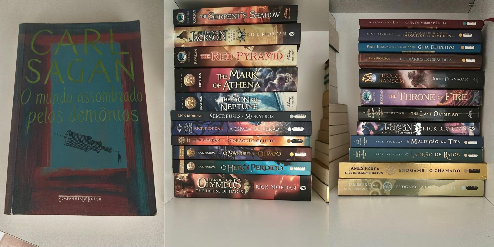
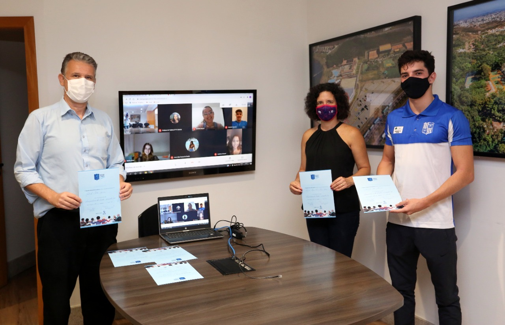
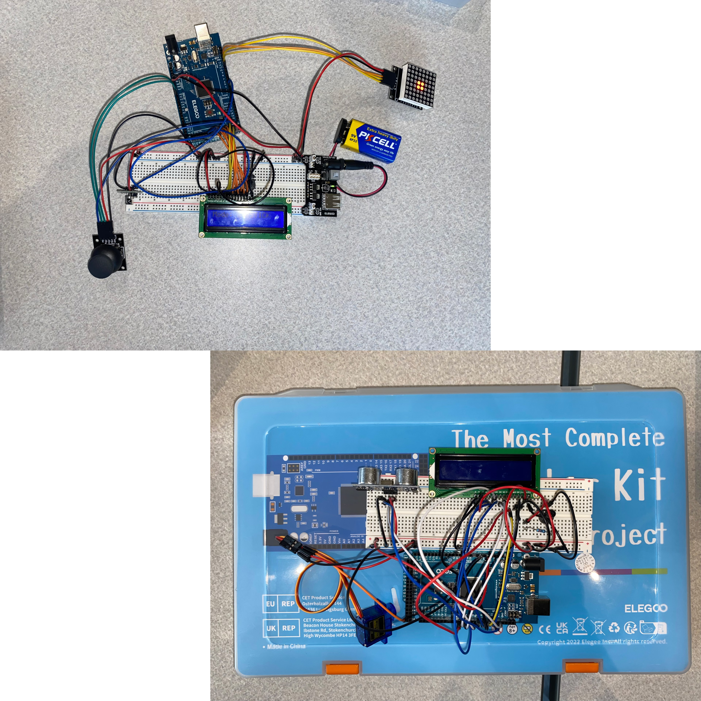
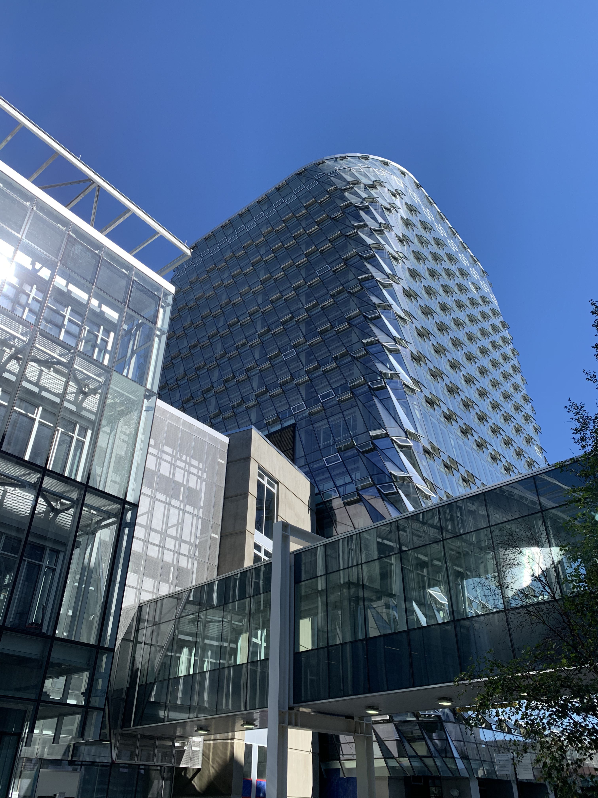

Hello, I'm Nicolas Leo Moreira
Sustainable Systems Engineering and Digital Engineering Student
About Me
I was born in Brazil, and moved to Australia when I was 5 years old, where I spent three years and sparked my desire to study abroad. I've come to believe that education really benefits when you step out of your comfort zone, learning from new cultures, friendships, and diverse perspectives.

Why Engineering? Ever since I was young, I've been captivated by the idea of building and understanding how things come together. I was that curious kid who would stand outside construction sites, wondering what everything was for. So choosing to study engineering felt like a natural decision.

Why Sustainability? I knew I wanted to make a positive impact on the world. I remember when my mom got a free one-year National Geographic magazine subscription, and I would wait every month to see the new edition. They always had a section that talked about clean energy or sustainable technologies, and I always found that to be my favorite read. I've always enjoyed being out in nature and I want to know that I'm doing something that will help preserve it for me, and for everyone else.

My parents put me in a swimming class at the age of 3, after I almost drowned in a pool and my mom (who doesn't know how to swim) had to save me. Ever since, I've spent 10 years swimming competitively. Swimming has taught me so much, and my best placements were 8th in Brazil in my age category in the 100m breaststroke and 3rd in the 4x100m medley relay. I've also swum a few open water 5km and 10km events.

I love hiking, snowboarding and being outdoors in general. However, if I'm inside I would love to be building Legos.
I'm a huge Coldplay fan, but my favorite song is Sweet Disposition, by The Temper Trap.
I love football (the true football) and I'm a huge Atletico Mineiro supporter, my hometown club.
I've always loved to read, specially the Percy Jackson novel series, by Rick Riordan, My favorite book is The Demon-Haunted World, by Ann Druyan and Carl Sagan. It changed my view on life, by highlighting how scientific thinking is crucial for navigating today's complex world. The book is extremely well written and offers insights on how we can separate fact from fiction and think critically, empowering us to make informed decisions.
I'm currently training for an Ironman 70.3 Calgary, Alberta, that will be on July 28, 2024.

My Projects
School Tutoring
I took part in several projects like dog adoption campaigns, food and clothes distribution for the homeless, orphanages and retirement homes visits, natural disaster relief campaigns, as well as online classes for public school students. The latter is an initiative I created after discovering that these children were not having classes and didn't receive any support from their institutions during school closures. The project was called "School Tutoring" and we gave online classes for these students according to their demand. For this initiative I was awarded by the president of the institution, Ricardo Vieira Santiago, and the volunteering group-leader, Karina Barquete.
ENGG 200 - Introduction to Engineering Design
In my first year of Engineering, we were given the final project to develop a portable video game console, marking my initial experience in applying theoretical engineering principles to a practical, user-centered design. Collaborating in a team, we created a console inspired by Piano Tiles, that contained 4 different songs that we picked and a classic piano-inspired design (which I'm quite proud of designing in my first experience with Fusion360). This experience showed me the importance of integrating user experience, aesthetics, and functionality, highlighting engineering as a field driven by innovation, problem-solving, and the ability to meet end-user needs.
SUSE 300 - Introduction to Sustainable Systems Design
Description of Project 1. Briefly talk about what it accomplishes, the technologies used, and any challenges you overcame.

SUSE 303 - Signals, Instrumentation, and Data
In the SUSE 303 course, we made projects like the Arduino Calculator, Automatic Door Opener, and Joystick/IR Remote Controlled Dot Matrix. My biggest takeaway was how technology supports sustainability through systems thinking. It was very interesting to see how even Arduinos, something very popular and widely utilized, can contribute significantly towards sustainable goals. Using the components and finding ways to integrate them in a functioning project, taught me to see projects not just as tasks but as opportunities to integrate sustainable design principles into every aspect of engineering.
SUSE 315 - Engineering Economics and Decision Making for Sustainability
In SUSE 315, our final project was to evaluate the installation of the rainwater cistern at the MacKimmie Tower in the University of Calgary, using triple bottom line accounting. The most significant learning was the challenges of assigning monetary values to such abstract things. This project showed the importance of holistic thinking in sustainability, highlighting that while the solution might be beneficial environmentally, we still have to consider options to make it more financially viable. It taught me the criticality of integrating economic principles into sustainable engineering projects, viewing them as opportunities to quantify our positive contribution to our community and environment.
Contact Me
Personal: (587) 896-7632 | nicolasleomoreira@gmail.com